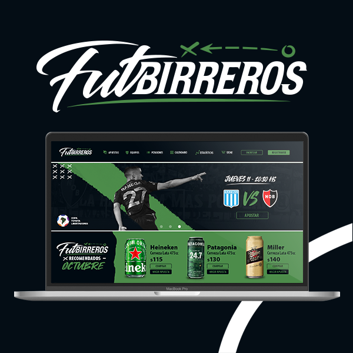

FUTBIRREROS
Proyecto de Branding relizado para Periplo Bar con la idea
de sistematizar elementos visuales que se relacionen entre si para
generar dialogo entre ilustraciones, marcas y tipografías. La particularidad
de este proyecto fue encontrarle un lenguaje y una expresión única referida
a la temática marina, ya que dicho bar se encuentra a orillas del rio nordelta. Conceptualmente la
realización de marca fue asociada a su modo artesanal de realizar
sus produccion.